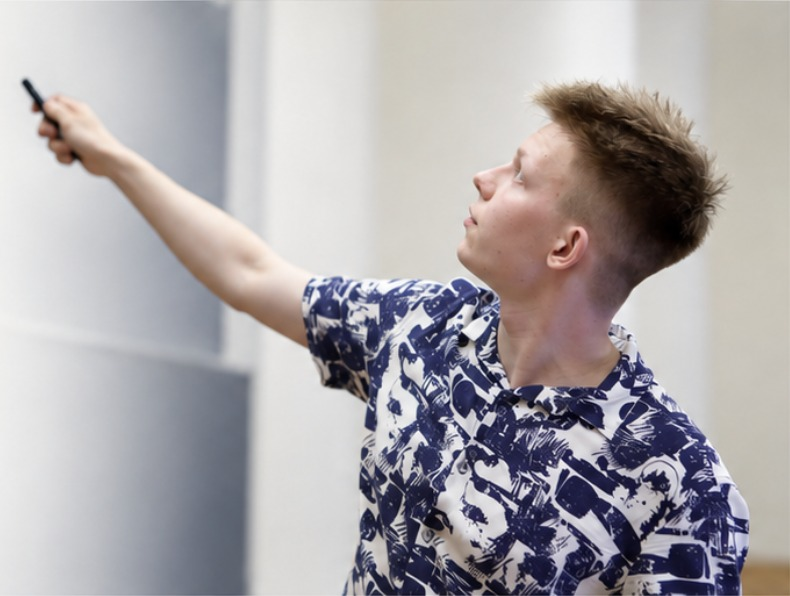

About
About me
Daniil Lysenko · Alferov University
Spectra, numerical models, and astrophysics.
I'm a fourth-year undergraduate studying physics on the astrophysics track at Alferov University in St. Petersburg. I began my degree at Novosibirsk State University and transferred in 2024. I expect to graduate in June 2027.
My earlier projects included neutron-star structure and magnetic fields. At the Ioffe Institute, I now work on quasar absorption systems and gamma-ray-burst light curves, using spectroscopy, statistical inference, and numerical modeling.
Alongside research, I teach mathematics and physics to international students in English and Russian.
Research ↗ CV ↗
Background
Education and interests
Alferov University, B.Sc. Physics (Astrophysics track), expected 2027
Novosibirsk State University, Physics, 2023–2024
Quasar absorption-line systems; interstellar and intergalactic media; neutron stars; plasma astrophysics; theoretical and computational methods
Mathematics and physics tutoring; student scientific talks; science and technical computing